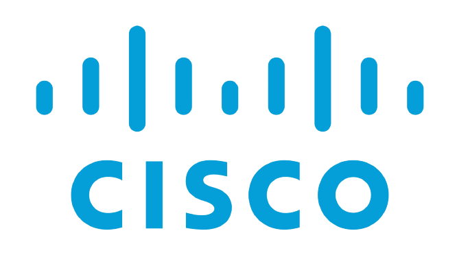
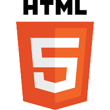

COMPÉTENCES:
-

- 
- 
-

Mon objectif professionnel est de me diriger dans le Développemet Web ou la Cybersécurité.
En tant que développeur Web, je pourrais créer des solutions innovantes
pour résoudre des problèmes réels, afin d'apporter un impact positif à travers la technologie.
La Cybersécurité, quant à elle, me permettra de protéger les systèmes et les données contre
les menaces en constante évolution, en concevant des stratégies solides et en assurant un environnement
numérique sûr pour tous.